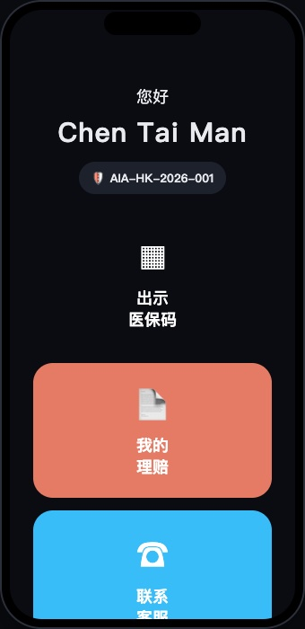

Overview项目概述
HKEdgeApp is a cross-border Hong Kong–Shenzhen medical data application for iOS and Android, built through a school-enterprise internship with Hong Kong Data Ltd. It supports the flow for Hong Kong residents seeking medical treatment in mainland China: identity verification and insurance binding, a cross-border medical QR code, claims submission and tracking, and hospital-side claim verification.
HKEdgeApp 是一款面向 iOS 和 Android 的跨境港深医疗数据应用，通过与 Hong Kong Data Ltd. 的校企实习项目开发。它支持香港居民在内地就医的完整流程：身份核验与保险绑定、跨境就医二维码、理赔提交与进度跟踪，以及医院端理赔核验。
The application consists of 19 front-end screens, 14 API modules, 57 documented files and 64 GitHub commits. The client is a React Native 0.85.3 application with screens written in TypeScript and JavaScript, a Context-based state layer, a service layer for API calls, and a three-language interface; the back end is an Express server with static pages for the hospital and contract-signing demos.
应用包含 19 个前端页面、14 个 API 模块、57 份文档和 64 次 GitHub 提交。客户端基于 React Native 0.85.3，页面由 TypeScript 和 JavaScript 编写，采用基于 Context 的状态层、统一的 API 服务层和三语界面；后端为 Express 服务器，包含医院端与签约演示的静态页面。
I led the technical side of the four-developer team. I wrote and enforced the team's Git collaboration rules (documented in BRANCH_STRATEGY.md), and reported jointly to our company mentor and the director of the university's AI institute. After the internship, the project was handed over and is now carried forward by engineers at China Unicom.
我在四人开发团队中负责技术侧：编写并落实团队的 Git 协作规范（记录在 BRANCH_STRATEGY.md 中），并向企业导师与学院人工智能研究院院长双线汇报。实习结束后项目完成交接，目前由中国联通工程师继续推进。
The code repository is private. Demonstration materials, architecture documentation and selected project documents are reproduced on this page.代码仓库为私有。演示材料、架构文档和部分项目文档在本页面展示。
App Demo应用演示
Screen recording操作录屏
Interactive demos交互演示
- Full feature map (auto tour) — an interactive walkthrough of the 13 app modules; click "Auto Tour" to step through them. This page is self-contained and needs no server.
- End-to-end flow demo — the cross-border medical QR code and claims flow, from identity verification to hospital verification.
- 完整功能地图（自动巡览）——13 个应用模块的交互式讲解，点击 "Auto Tour" 可逐步浏览。该页面自包含，无需服务器。
- 端到端流程演示——跨境就医二维码与理赔流程，从身份核验到医院核验。
Screenshots应用截图
Screens from the current app interface (dark theme with orange accents), captured from the interactive feature-map demo.当前应用界面（深色主题配橙色点缀）截图，取自交互式功能地图演示。



System Architecture系统架构

Feature Map功能地图
The demo script in the project documentation lists 13 modules. In the order presented there:
项目文档中的演示脚本列出 13 个模块，按其中顺序：
- KYC — name, HKID, phone, or one-tap iAM Smart fill
- Global toggles — theme, three-language cycle, secure logout
- Insurance binding — pick insurer, auto-load policies, switch in one tap
- Route guard — protects gated entries
- Main shell — three-state hero, single-line categories, live progress
- Claims list — cross-insurer aggregation, four filter chips
- Refund on settled claims, with a five-step timeline
- AI agent — bottom-sheet chat backed by the project's LLM endpoint
- Profile — information card and Elder Mode switch
- Activities — history feed
- Categories grid — two live entries and four roadmap placeholders
- Hospital demo — verification screen for B2B presentations
- Elder Mode — fonts of 18px or larger, 110px buttons, three one-tap actions
- KYC —— 姓名、香港身份证、手机号，或一键 iAM Smart 带入
- 全局切换 —— 主题、三语轮换、安全登出
- 保险绑定 —— 选择保险公司、自动载入保单、一键切换
- 路由守卫 —— 保护受限入口
- 主框架 —— 三态主视觉、单行分类、实时进度
- 理赔列表 —— 跨保司聚合、四个筛选标签
- 已结案理赔的退款申请，附五步时间线
- AI 智能体 —— 底部抽屉式对话，接入项目 LLM 接口
- 个人中心 —— 信息卡片与长者模式开关
- 活动 —— 历史动态
- 分类宫格 —— 两个已上线入口与四个路线图占位
- 医院端演示 —— 面向 B2B 汇报的核验页面
- 长者模式 —— 18px 及以上字体、110px 按钮、三个一键操作
Full feature-map demo script (rendered, English)完整功能地图演示脚本（渲染版，英文）
Git Collaboration and Branch StrategyGit 协作与分支策略
I wrote the team's Git collaboration rules in BRANCH_STRATEGY.md (last updated 18 June 2026). The strategy keeps only two permanent branches — main (production, merged into but never committed to directly) and develop (the integration line). All other branches are temporary and deleted after merging: feature/* and fix/* for shared JavaScript/TypeScript code, ios/* and android/* for platform-native changes, and release/* for releases. Work goes through a pull request targeting develop; main is updated only from develop at release time.
我在 BRANCH_STRATEGY.md 中编写了团队的 Git 协作规范（最后更新于 2026 年 6 月 18 日）。策略只保留两条永久分支——main（生产环境，只接受合并、不直接提交）和 develop（开发主线）。其余分支均为临时分支，合并后即删除：feature/* 与 fix/* 用于共享的 JavaScript/TypeScript 代码，ios/* 与 android/* 用于平台原生层改动，release/* 用于发布。开发通过指向 develop 的 Pull Request 进行；main 仅在发布时从 develop 更新。
When the iOS and Android lines had diverged, I also wrote a branch merge analysis (8 July 2026) documenting four divergent branches, around 20 conflicting files — including mutually exclusive screen registrations in App.tsx and different API-layer designs — and a two-step merge plan: merge the smaller Android branch into develop first, then the larger iOS branch, keeping both screen sets and adopting the unified service layer and fuller i18n coverage.
在 iOS 与 Android 两条开发线分叉后，我还撰写了分支合并分析（2026 年 7 月 8 日），记录四个分叉分支、约 20 个冲突文件（包括 App.tsx 中互斥的页面注册和不同的 API 层设计），以及两步合并方案：先将较小的 Android 分支合入 develop，再合入较大的 iOS 分支，保留两套页面并采用统一的服务层与更完整的 i18n 覆盖。
Branch strategy (rendered document)分支策略（渲染文档） · Team Git collaboration guide (rendered document)团队 Git 协作指南（渲染文档） · Full branch merge analysis (rendered document)分支合并分析全文（渲染文档）
Project Documents项目文档
The repository's Markdown documents, rendered here as styled pages so they can be read in the browser. Each document is available in English and in the original Chinese.仓库中的 Markdown 文档，已渲染为带样式的网页，可直接在浏览器中阅读。每份文档均提供英文版与中文原文版。
- System architecture系统架构文档 — layers, state, navigation, screens and API —— 分层、状态、导航、页面与 API
- Git branch strategyGit 分支策略 — permanent and temporary branches, PR workflow —— 永久与临时分支、PR 工作流
- Frontend–backend API map前后端 API 关系图 — screens, API modules and endpoints —— 页面、API 模块与接口
- Team Git collaboration guide团队 Git 协作指南 — Q&A and team conventions —— 常见问题与团队约定
- Branch merge analysis分支合并分析 — divergence and two-step merge plan —— 分叉情况与两步合并方案
- App feature map and demo script (English)应用功能地图与演示脚本（英文）
- Project README项目 README
- System architecture diagram (SVG) · App demo screen recording (MP4)系统架构图（SVG） · 应用演示录屏（MP4）
Further source code and documentation are available on request; the repository itself is private.更多源代码与文档可按需提供；代码仓库为私有。